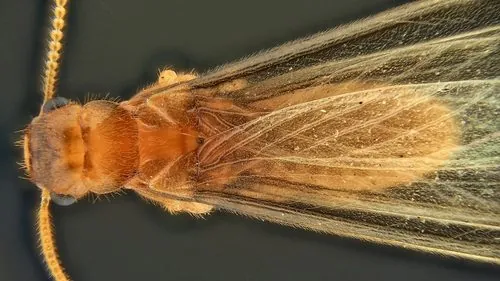

昆虫 · 动物界
家白蚁 Coptotermes formosanus

危险性极强的地下白蚁，群体可含数百万只个体，能蛀食建筑木材与活树，是中国南方常见的重要害虫。
- 分类
- 门节肢动物门纲昆虫纲目蜚蠊目科鼻白蚁科属乳白蚁属
- 栖息环境
- 地下巢系，常筑巢于潮湿土壤、建筑地基与树木根部
- 地理分布
- 中国南方和台湾地区，已随木材贸易传入美国、日本等地
- 保护级别
- 暂无评估；全球性入侵木材害虫
物种志
家白蚁有翅繁殖蚁体长约 1.4–1.6 cm，黄褐色，四翅等长，翅长明显超过身体；工蚁和兵蚁体白色，兵蚁上颚发达，受惊时会分泌乳白色防御液体，家白蚁之名由此而来。群体在地下筑巢，通过泥被和泥线一样的蚁路取食。
群体由一对原始蚁王和蚁后建立，蚁后腹部膨大，寿命可超过 10 年，日产卵数百至上千枚，成熟群体可达数百万只。工蚁啃食木材，消化道内的共生微生物能分解纤维素。家白蚁原产东亚，是中国南方和台湾地区的常见害虫，并随木材贸易传入美国、日本、南非等地，成为全球性入侵木材害虫，蛀食建筑木构件、堤坝、电缆和活树，造成重大经济损失。防治主要依靠诱杀饵剂、土壤药剂屏障和长期监测。
形态与习性
- 食性工蚁啃食木材，靠肠道微生物分解纤维素
- 体长有翅繁殖蚁约 1.4–1.6 cm，工蚁约 0.5 cm
- 社会结构一对蚁王蚁后建巢，群体可达数百万只
- 繁殖蚁后日产卵数百至上千枚，寿命可超 10 年
- 危害蛀食木构件、堤坝、电缆和活树，造成重大经济损失
- 防治诱杀饵剂、土壤屏障与长期监测
趣味知识
- 家白蚁其实不是蚂蚁，它在分类上属于蜚蠊目，与蟑螂亲缘更近。
- 兵蚁受惊时分泌乳白色液体，家白蚁的名字由此而来。
- 白蚁的肠道里住着能分解木材的共生微生物，帮助它消化纤维素。